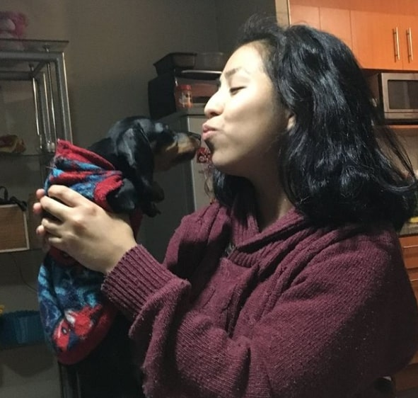
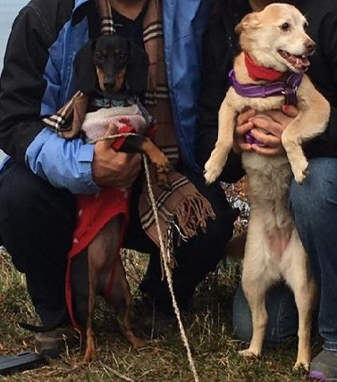

My Homes:
Santiago

The place where I was born. I like the hot weather and my apartment, and walks through parks.
Punta Arenas
Where I stay with my abuelitos. I like sliding on the ice, biting the rain, finding birds, and visiting my friend Logan.

About Me:
I was born in Santiago de Chile on 10/4/2019 🎉🎂. Two months later I met my amazing Mami Karina, and I went to live in her apartment in downtown Santiago. I was really small then, but I grew quickly.
Some of my past-times are going for long walks, playing, and sniffing things. In 2020 I got to stay with my abuelitos for a while because of the pandemic, I got lots of snacks, and made a new friend, Annie.
